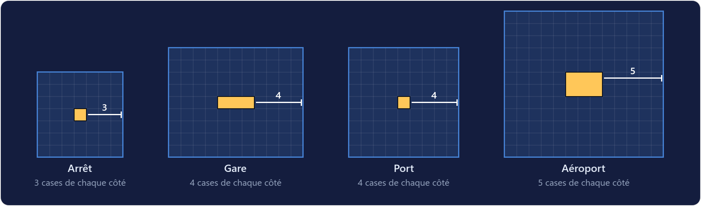

Zone de desserte
Ce qu'une station peut atteindre.
Une station charge et livre auprès de tout ce qui se trouve dans sa zone de desserte : un carré autour de chacune de ses cases. Voici les quatre types à la même échelle.


Pendant que tu places une station, la zone bleue sur la carte est sa zone de desserte, et on t'indique ce qu'elle accepterait et fournirait.
Ce que fournit une station
- La production de toutes les industries dans la zone de desserte.
- Les voyageurs et le courrier de chaque bâtiment qui s'y trouve, et à partir de 1980 les déchets aussi.
- Les passagers qui rentrent chez eux depuis une industrie de la zone qui veut du personnel.
- La cargaison ne commence à s'accumuler que lorsqu'un véhicule qui la transporte a la station dans ses ordres.
Ce qu'accepte une station
| Cargaison | Accepté quand la zone contient |
|---|---|
| Tout ce qu'utilise une industrie | une industrie qui l'utilise |
| Passagers | au moins 12 habitants, ou une industrie qui veut du personnel |
| Courrier | au moins 30 habitants |
| Marchandises, Nourriture | au moins 60 habitants |
| Journaux | maisons d'une ville d'au moins 150 habitants |
| Électronique | à partir de 1995, une tour de bureaux, un centre commercial ou un parc technologique |
| Voitures | à partir de 1995, des maisons d'une ville d'au moins 1 000 habitants |